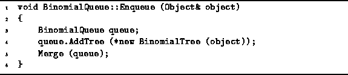

Data Structures and Algorithms
with Object-Oriented Design Patterns in C++
Data Structures and Algorithms
with Object-Oriented Design Patterns in C++With the Merge routine at our disposal, the Enqueue operation is easy to implement. To enqueue an item in a given binomial queue, we create another binomial queue that contains just the one item to be enqueued and merge that queue with the original one.
Program  shows how easily this can be done.
Creating the empty queue (line 3) takes a constant amount of time.
Creating the binomial tree
shows how easily this can be done.
Creating the empty queue (line 3) takes a constant amount of time.
Creating the binomial tree  with the one object at its root (line 4)
can also be done in constant time.
Finally, the time required to merge the two queues is
with the one object at its root (line 4)
can also be done in constant time.
Finally, the time required to merge the two queues is
where n is the number of items originally in the queue.

Program: BinomialQueue Class Enqueue Member Function Definition
 Copyright © 1997 by Bruno R. Preiss, P.Eng. All rights reserved.
Copyright © 1997 by Bruno R. Preiss, P.Eng. All rights reserved.